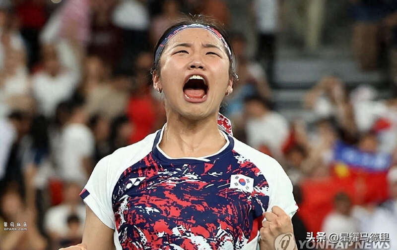
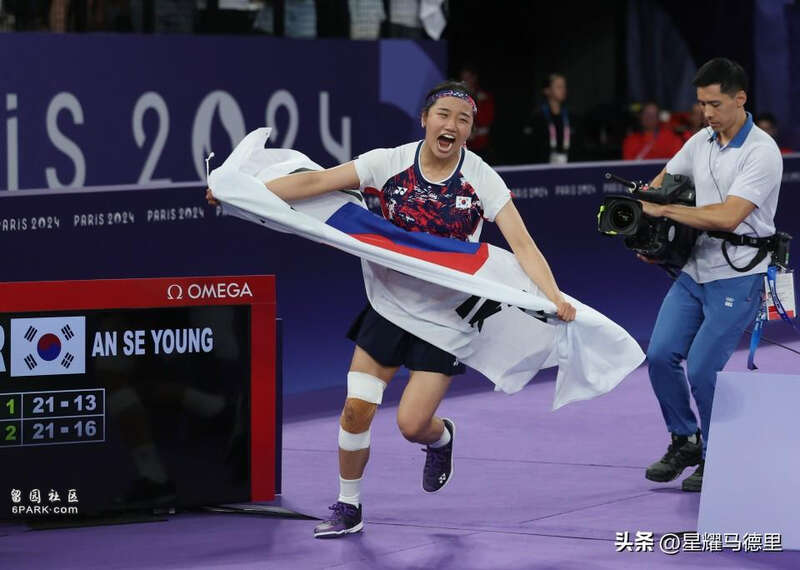
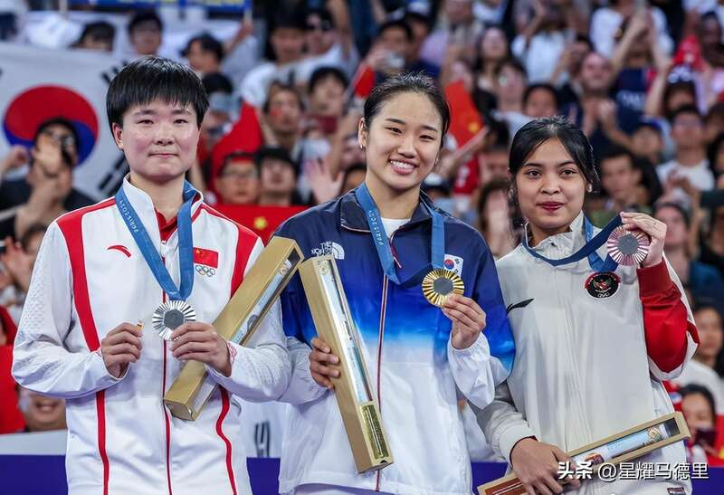
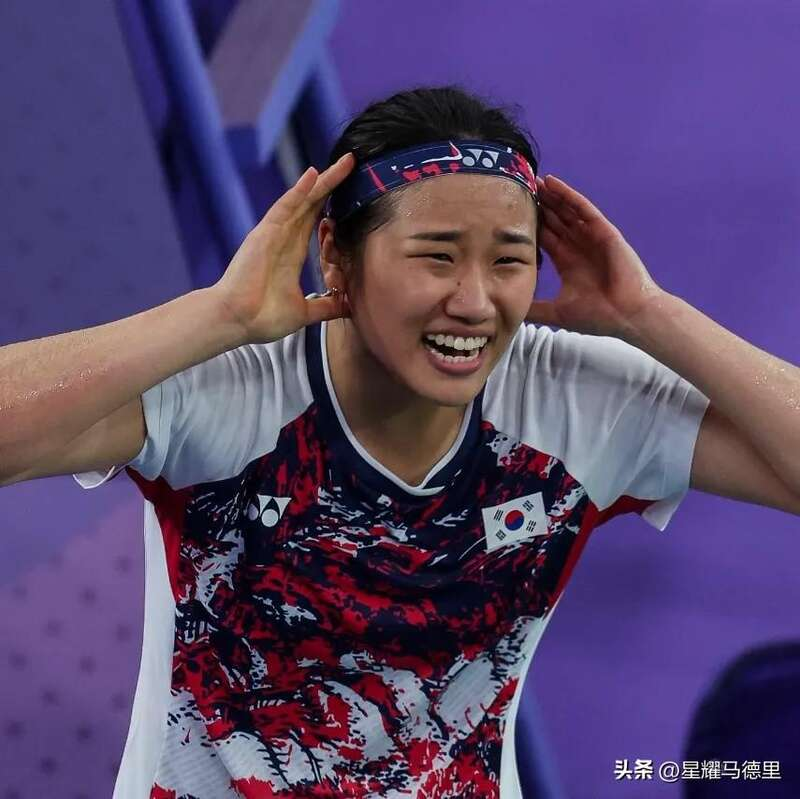
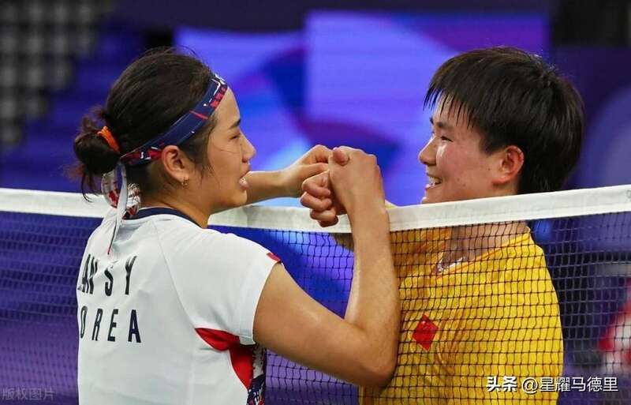

北京时间8月5日晚，韩国羽毛球天才少女安洗莹，在巴黎奥运会夺得女单金牌后，公开炮轰韩国羽协，并且威胁要退出国家队，她称“以后再为国效力会很困难”。

在此前结束的巴黎奥运会羽毛球女单决赛中，安洗莹2-0击败中国选手何冰娇，为韩国队时隔28年再度夺得奥运会羽毛球女单金牌。不过赛后，安洗莹却语出惊人，与韩国羽协矛盾颇深的她，公开扬言要退出国家队。

安洗莹如此说道：“我对韩国国家队非常失望，我认为国家队太自满了。这一刻之后，我想继续为国打下去可能会很困难。”

去年的亚运会女单决赛中，安洗莹膝盖受了重伤。但韩国国家队却依然强硬要求她过去1年继续带伤比赛结果直接导致她伤势加重，这让安洗莹十分愤怒。此前一度有消息称，安洗莹将退出本届奥运会并且直接退役，但她最终还是来参赛了。不过夺金后，并没有让安洗莹与国家队之间的矛盾化解，而是进一步加剧冲突。

在被问及是否会退出国家队时，安洗莹：“我想继续打羽毛球，提高自己的纪录，但我不知道韩国羽协会做什么。我想我可以忍受任何情况（开除），只要我能打羽毛球。单打和双打是完全不同的，但球员的参赛资格不应该被国家剥夺，我相信我能参加下一届奥运会。”安洗莹这番话，似乎在暗示自己可能会以个人名义，或者代表其他国家参加奥运会。

2002年出生的安洗莹，是羽坛公认的天才少女，年仅22岁的她已经登顶羽毛球女单世界第1的宝座。可以预见的是，如果安洗莹退出韩国队并且选择为其他国家队征战，相信也会获得许多羽球强国的邀请。中国队也可能是其中之一，毕竟此前中国就曾成功归化过与韩国矛盾颇深的短道速滑名将林孝埈。
Advertisements